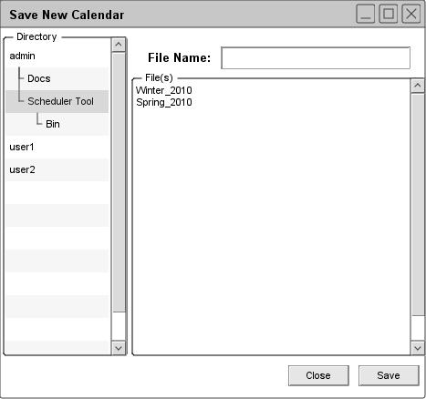
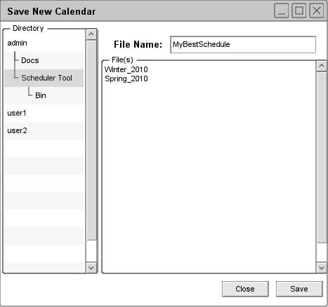

Figure 107: Confirm overwrite of an existing file
A new schedule is not associated with a file until it is saved for the first time. For new not-yet-saved schedules, the `Save' and `Save As' commands have exactly the same effect. When the user selects either of these commands for a not-yet-saved schedule, the system displays the dialog shown in Figure 105. It is assumed that the user has previously created and saved two other schedules named "Winter_2010" and "Spring_2010".

Figure 105: Initial save dialog for a not-yet-saved schedule
This dialog shows the initial state of the SchedulerTool directory before the user has saved any files. The program does not pre-enter "unnamed" in the "File" field, to discourage the user from naming a schedule "unnamed".
As in the file-open dialog, the user may navigate to another directory by navigating through the "Directory" tree in the scrollable list on the left. To save to a file, the user types its name in the "File" field. The system enables the "Save" button when the user begins typing, and it remains enabled unless the user does one of the following:
- Erases all typing
- Enter the name of a currently open schedule file
- Enters the name of an unwritable schedule file
- Enters the name of an unreadable directory
- Enters the name of an existing, non-schedule file
The system disallows saving in any of these circumstances. If the user continues typing to change these circumstances, the system re-enables the "Save" button. The system does allow saving a schedule into an existing schedule file, which is described shortly.
Figure 106 shows the user having entered the name "MyBestSchedule" for saving.

Figure 106: Initial save dialog; filled in
When the user presses "Save", the system saves the entire contents of the schedule onto the named file. All scheduled items are saved. After completing the save, the system removes the save dialog from the screen. If the user enters the name of an existing schedule file and presses "Save", the system asks for overwrite confirmation, as illustrated in Figure 107.
Figure 107: Confirm overwrite of an existing file
When the current schedule is already associated with a file, the "Save" and "Save As" commands differ. The "Save command is enabled whenever the current schedule is associated with a file, and the schedule has unsaved changes. A schedule has unsaved changes when the user has performed one or more of the following actions since the file was opened or the last confirmed save operation, whichever has occurred most recently:
- confirmed any schedule-changing command
- confirmed any change to filter settings or custom filters
- executed any command in the view menu that changes the state of the display screen
- changed the windowing mode
- applied any option changes
- confirmed any database-changing commands
If the user undoes any of these actions such that the state of the schedule returns to the same state as most recently saved, the schedule no longer has unsaved changes. The "state" of the schedule is defined as the values of all scheduled items and scheduler-specific settings. It is noteworthy that the definition of unsaved change includes any and all actions that change scheduled items or scheduler-specific settings.
prev: open recent | next: save as | up: file commands | index: index